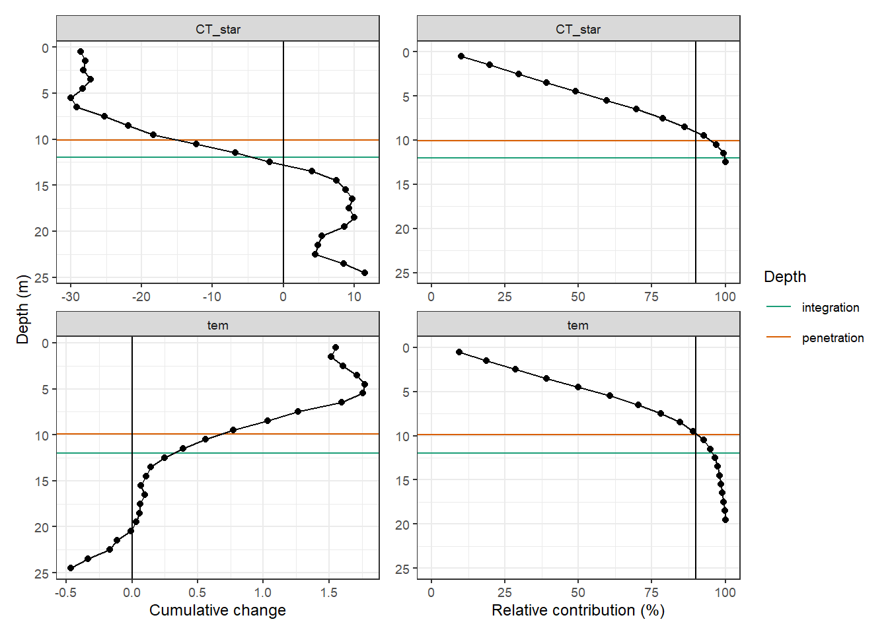
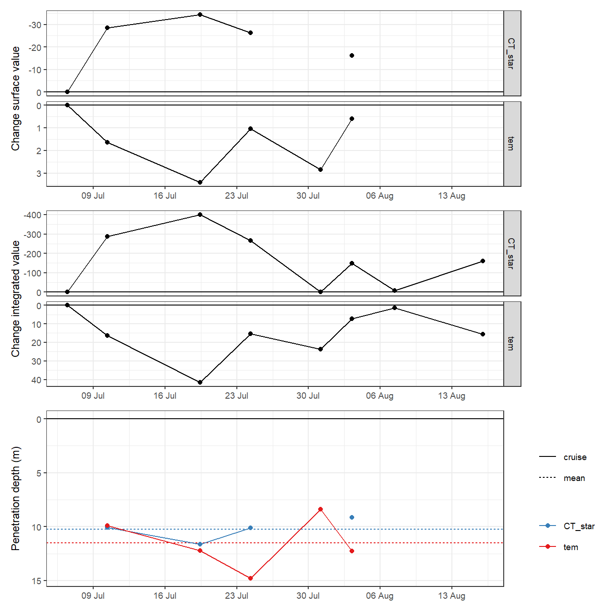
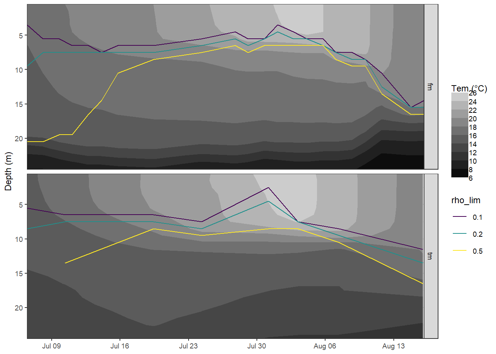

NCP reconstruction
Jens Daniel Müller
20 May, 2020
Last updated: 2020-05-20
Checks: 7 0
Knit directory: BloomSail/
This reproducible R Markdown analysis was created with workflowr (version 1.6.1). The Checks tab describes the reproducibility checks that were applied when the results were created. The Past versions tab lists the development history.
Great! Since the R Markdown file has been committed to the Git repository, you know the exact version of the code that produced these results.
Great job! The global environment was empty. Objects defined in the global environment can affect the analysis in your R Markdown file in unknown ways. For reproduciblity it’s best to always run the code in an empty environment.
The command set.seed(20191021) was run prior to running the code in the R Markdown file. Setting a seed ensures that any results that rely on randomness, e.g. subsampling or permutations, are reproducible.
Great job! Recording the operating system, R version, and package versions is critical for reproducibility.
Nice! There were no cached chunks for this analysis, so you can be confident that you successfully produced the results during this run.
Great job! Using relative paths to the files within your workflowr project makes it easier to run your code on other machines.
Great! You are using Git for version control. Tracking code development and connecting the code version to the results is critical for reproducibility.
The results in this page were generated with repository version ef99640. See the Past versions tab to see a history of the changes made to the R Markdown and HTML files.
Note that you need to be careful to ensure that all relevant files for the analysis have been committed to Git prior to generating the results (you can use wflow_publish or wflow_git_commit). workflowr only checks the R Markdown file, but you know if there are other scripts or data files that it depends on. Below is the status of the Git repository when the results were generated:
Ignored files:
Ignored: .Rhistory
Ignored: .Rproj.user/
Ignored: data/Finnmaid_2018/
Ignored: data/GETM/
Ignored: data/Maps/
Ignored: data/Ostergarnsholm/
Ignored: data/TinaV/
Ignored: data/_merged_data_files/
Ignored: data/_summarized_data_files/
Ignored: data/backup/
Ignored: output/Plots/Figures_publication/.tmp.drivedownload/
Untracked files:
Untracked: output/Plots/Figures_publication/Article/reconstruction_timeseries.pdf
Note that any generated files, e.g. HTML, png, CSS, etc., are not included in this status report because it is ok for generated content to have uncommitted changes.
These are the previous versions of the repository in which changes were made to the R Markdown (analysis/NCP_reconstruction.Rmd) and HTML (docs/NCP_reconstruction.html) files. If you’ve configured a remote Git repository (see ?wflow_git_remote), click on the hyperlinks in the table below to view the files as they were in that past version.
| File | Version | Author | Date | Message |
|---|---|---|---|---|
| Rmd | ef99640 | jens-daniel-mueller | 2020-05-20 | finalized reconstruction approach |
| html | 1e15837 | jens-daniel-mueller | 2020-05-20 | Build site. |
| Rmd | 2378108 | jens-daniel-mueller | 2020-05-20 | finalized iCT reconstruction |
| html | 6aad8d7 | jens-daniel-mueller | 2020-05-19 | Build site. |
| Rmd | d7aa227 | jens-daniel-mueller | 2020-05-19 | finalized integration depth estimates |
| html | ae5779d | jens-daniel-mueller | 2020-05-19 | Build site. |
| Rmd | 5651fe5 | jens-daniel-mueller | 2020-05-19 | removed deep warming signal for z_pen determination |
| html | 6e3d899 | jens-daniel-mueller | 2020-05-19 | Build site. |
| Rmd | 0ba33ec | jens-daniel-mueller | 2020-05-19 | cleaned NCP reconstruction IV |
| html | 7f4066e | jens-daniel-mueller | 2020-05-19 | Build site. |
| Rmd | 536cb1a | jens-daniel-mueller | 2020-05-19 | cleaned NCP reconstruction III |
| html | dd7e745 | jens-daniel-mueller | 2020-05-19 | Build site. |
| Rmd | 33c4313 | jens-daniel-mueller | 2020-05-19 | cleaned NCP reconstruction II |
| html | 57b5f60 | jens-daniel-mueller | 2020-05-19 | Build site. |
| Rmd | fa8ce00 | jens-daniel-mueller | 2020-05-19 | cleaned NCP reconstruction |
| html | 6fcea7b | jens-daniel-mueller | 2020-05-18 | Build site. |
| Rmd | 09ccf10 | jens-daniel-mueller | 2020-05-18 | merged tm and gt NCP reconstruction |
library(tidyverse)
library(ncdf4)
library(seacarb)
library(oce)
library(patchwork)
library(lubridate)
library(metR)1 Approach
In order to test how (and how well) the depth-integrated CT estimates can be reproduced if only surface CO2 data were available, the BloomSail observations were restricted to those made in surface water and following reconstruction approaches were tested:
- Mixed layer depth: Integration of surface observation across the MLD, assuming homogenious vertical patterns
- CT profile reconstruction: Vertical reconstruction of incremental CT changes based on profiles of incremental changes in temperature
- Temperature penetration depth: Integration of surface observation across the temperature penetration depth, assuming similar vertical extension as for CT drawdown.
Note: The reconstruction of CT profiles and the integration across the temperature penetration depth should produce very similar results. However, the latter avoids to create misinterpretable information about the vertical distribution of CT.
max_dep <- 25
surface_dep <- 6
integration_dep <- 12
date_CT_min <- ymd_hms("2018-07-24 07:58:29")
date_tem_max <- ymd_hms("2018-08-04 00:00:00")2 BloomSail data
1m gridded, downcast profiles were used. Mean CO2 data from upper 6 metres were used as surface values.
tm_profiles_ID <-
read_csv(here::here("Data/_merged_data_files/CT_dynamics", "tm_profiles_ID.csv"))
tm_profiles_ID <- tm_profiles_ID %>%
select(-c(date_ID))tm_profiles_ID_long <- tm_profiles_ID %>%
select(-c(pCO2, sal)) %>%
pivot_longer(c("tem", "nCT"), values_to = "value", names_to = "var") %>%
group_by(var, dep) %>%
arrange(date_time_ID) %>%
mutate(date_time_ID_diff = as.numeric(date_time_ID - lag(date_time_ID)),
date_time_ID_ref = date_time_ID - (date_time_ID - lag(date_time_ID))/2,
value_diff = value - lag(value, default = first(value)),
value_diff_daily = value_diff / date_time_ID_diff,
value_cum = cumsum(value_diff)) %>%
ungroup()2.1 CT and tem penetration depth
2.1.1 Cumulative on July 23
tm_profiles_ID_long_180723 <- tm_profiles_ID_long %>%
filter(ID == 180723)
tm_profiles_ID_long_180723_dep <- tm_profiles_ID_long_180723 %>%
select(var, dep, value_cum) %>%
mutate(value_cum = if_else(value_cum > 0 & var == "nCT",
NaN, value_cum),
value_cum = if_else(value_cum < 0 & var == "tem",
NaN, value_cum)) %>%
group_by(var) %>%
arrange(dep) %>%
mutate(value_cum_i = sum(value_cum, na.rm = TRUE),
value_cum_dep = cumsum(value_cum),
value_cum_i_rel = value_cum_dep/value_cum_i*100) %>%
ungroup()
value_cum <- tm_profiles_ID_long_180723_dep %>%
group_by(var) %>%
summarise(value_cum_i = mean(value_cum_i)) %>%
ungroup()
value_surface <- tm_profiles_ID_long_180723 %>%
select(var, dep, value_cum) %>%
filter(dep < surface_dep) %>%
group_by(var) %>%
summarise(value_surface = mean(value_cum)) %>%
ungroup()
TPD <- full_join(value_cum, value_surface)
TPD <- TPD %>%
mutate(TPD = value_cum_i / value_surface)
rm(value_cum, value_surface)p_tm_profiles_ID_long <- tm_profiles_ID_long_180723 %>%
arrange(dep) %>%
ggplot(aes(value_cum, dep))+
geom_hline(aes(yintercept = integration_dep, col="integration"))+
geom_hline(data = TPD, aes(yintercept = TPD, col="penetration"))+
geom_vline(xintercept = 0)+
geom_point()+
geom_path()+
scale_y_reverse()+
scale_color_brewer(palette = "Dark2", guide = FALSE)+
labs(y = "Depth (m)", x="Cumulative change")+
theme(legend.position = "left")+
facet_wrap(var~., ncol = 1, scales = "free_x")
p_tm_profiles_ID_long_rel <- tm_profiles_ID_long_180723_dep %>%
ggplot(aes(value_cum_i_rel, dep))+
geom_hline(aes(yintercept = integration_dep, col="integration"))+
geom_hline(data = TPD, aes(yintercept = TPD, col="penetration"))+
geom_vline(xintercept = 90)+
geom_point()+
geom_line()+
scale_y_reverse(limits = c(25,0))+
scale_color_brewer(palette = "Dark2", name = "Depth")+
scale_x_continuous(limits = c(0, NA))+
labs(x = "Relative contribution (%)")+
facet_wrap(var~., ncol = 1, scales = "free_x")+
theme(axis.title.y = element_blank())
p_tm_profiles_ID_long + p_tm_profiles_ID_long_rel
TPD# A tibble: 2 x 4
var value_cum_i value_surface TPD
<chr> <dbl> <dbl> <dbl>
1 nCT -935. -89.5 10.4
2 tem 71.0 6.10 11.6rm(tm_profiles_ID_long_180723,
tm_profiles_ID_long_180723_dep,
p_tm_profiles_ID_long,
p_tm_profiles_ID_long_rel,
TPD)2.1.2 Daily
# surface values
diff_surface <- tm_profiles_ID_long %>%
filter(dep < surface_dep) %>%
group_by(ID, var) %>%
summarise(value_diff_surface = mean(value_diff, na.rm = TRUE)) %>%
ungroup() %>%
mutate(value_diff_surface = if_else(value_diff_surface > 0 & var == "nCT",
NaN, value_diff_surface),
value_diff_surface = if_else(value_diff_surface < 0 & var == "tem",
NaN, value_diff_surface))
tm_profiles_ID_long <- full_join(tm_profiles_ID_long, diff_surface)
rm(diff_surface)
# calculate penetration depths
TPD <- tm_profiles_ID_long %>%
mutate(value_diff = if_else(value_diff > 0 & var == "nCT",
NaN, value_diff),
value_diff = if_else(value_diff < 0 & var == "tem",
NaN, value_diff)) %>%
group_by(var, ID, date_time_ID) %>%
summarise(value_diff_int = sum(value_diff, na.rm = TRUE),
value_diff_surface = mean(value_diff_surface, na.rm = TRUE)) %>%
ungroup() %>%
mutate(i_dep = value_diff_int / value_diff_surface)
TPD_mean <- TPD %>%
group_by(var) %>%
summarise(i_dep_mean = mean(i_dep, na.rm=TRUE),
i_dep_sd = sd(i_dep, na.rm=TRUE)) %>%
ungroup()p_surface <- TPD %>%
ggplot(aes(date_time_ID, value_diff_surface))+
geom_hline(yintercept = 0)+
geom_line()+
geom_point()+
scale_y_reverse(name = "Change surface value")+
scale_x_datetime(breaks = "week", date_labels = "%d %b")+
scale_color_brewer(palette = "Set1", direction = -1)+
theme(axis.title.x = element_blank(),
legend.title = element_blank())+
facet_grid(var~., scales = "free_y")
p_integrated <- TPD %>%
ggplot(aes(date_time_ID, value_diff_int))+
geom_hline(yintercept = 0)+
geom_line()+
geom_point()+
scale_y_reverse(name = "Change integrated value")+
scale_x_datetime(breaks = "week", date_labels = "%d %b")+
scale_color_brewer(palette = "Set1", direction = -1)+
theme(axis.title.x = element_blank(),
legend.title = element_blank())+
facet_grid(var~., scales = "free_y")
p_pen_dep <- TPD %>%
ggplot(aes(date_time_ID, i_dep, col=var))+
geom_hline(yintercept = 0)+
geom_hline(data = TPD_mean,
aes(yintercept = i_dep_mean,
col=var, linetype = "mean"))+
geom_line(aes(linetype="cruise"))+
geom_point()+
scale_y_reverse(name = "Penetration depth (m)", breaks = seq(0,20,5))+
scale_x_datetime(breaks = "week", date_labels = "%d %b")+
scale_color_brewer(palette = "Set1", direction = -1)+
theme(axis.title.x = element_blank(),
legend.title = element_blank())
p_surface + p_integrated + p_pen_dep +
plot_layout(ncol = 1)
TPD_mean# A tibble: 2 x 3
var i_dep_mean i_dep_sd
<chr> <dbl> <dbl>
1 nCT 10.1 1.11
2 tem 11.5 2.46CPD <- TPD %>%
filter(var == "nCT") %>%
drop_na()
rm(p_surface, p_integrated, p_pen_dep)
rm(TPD, TPD_mean, tm_profiles_ID_long)3 GETM
3.1 Subsetting criteria
# route
select_route <- "E"
# latitude limits
low_lat <- 57.3
high_lat <- 57.5
# date limits
start_date <- "2018-06-20"
end_date <- "2018-08-25"
fixed_values <-
read_csv(here::here("Data/_summarized_data_files", "tb_fix.csv"))3.2 Read netcdf file
nc <- nc_open(here::here("data/GETM", "Finnmaid.E.3d.2018.nc"))
#print(nc$var)
lat <- ncvar_get(nc, "latc")
time_units <- nc$dim$time$units %>% #we read the time unit from the netcdf file to calibrate the time
substr(start = 15, stop = 33) %>% #calculation, we take the relevant information from the string
ymd_hms() # and transform it to the right format
t <- time_units + ncvar_get(nc, "time") # read time vector
rm(time_units)
d <- ncvar_get(nc, "zax") # read depths vector
for (var_3d in c("salt", "temp", "SurfaceAge")) {
array <- ncvar_get(nc, var_3d) # store the data in a 3-dimensional array
#dim(array) # should be 3d with dimensions: 544 coordinates, 51 depths, and number of days of month
fillvalue <- ncatt_get(nc, var_3d, "_FillValue")
# Working with the data
array[array == fillvalue$value] <- NA
for (i in seq(1,length(t),1)){
# i <- 3
array_slice <- array[, , i] # slices data from one day
array_slice_df <- as.data.frame(t(array_slice))
array_slice_df <- as_tibble(array_slice_df)
gt_3d_part <- array_slice_df %>%
set_names(as.character(lat)) %>%
mutate(dep = -d) %>%
gather("lat", "value", 1:length(lat)) %>%
mutate(lat = as.numeric(lat)) %>%
filter(lat > low_lat, lat < high_lat,
dep <= max_dep) %>%
mutate(var = var_3d,
date_time=t[i]) %>%
select(date_time, dep, value, var)
if (exists("gt_3d")) {
gt_3d <- bind_rows(gt_3d, gt_3d_part)
} else {gt_3d <- gt_3d_part}
rm(array_slice, array_slice_df, gt_3d_part)
}
rm(array, fillvalue)
}
nc_close(nc)
rm(nc)
gt_3d_long <- gt_3d %>%
filter(date_time >= start_date & date_time <= end_date) %>%
group_by(date_time, var, dep) %>%
summarise_all(list(value=~mean(.,na.rm=TRUE))) %>% # regional averaging
ungroup()
gt_3d_long %>%
write_csv(here::here("data/_summarized_data_files", file = "gt_3d_long.csv"))
rm(gt_3d, gt_3d_long, i, lat, d, t, var_3d)3.3 Sal and tem profiles
gt_3d_long <-
read_csv(here::here("data/_summarized_data_files", "gt_3d_long.csv"))
gt_3d <- gt_3d_long %>%
pivot_wider(values_from = value, names_from = var) %>%
select(-SurfaceAge) %>%
rename(sal = salt, tem=temp)
rm(select_route, high_lat, low_lat)gt_3d_long <- gt_3d %>%
pivot_longer(c(sal, tem), values_to = "value", names_to = "var")
gt_3d_long %>%
ggplot(aes(value, dep,
col=date_time,
group=date_time))+
geom_path()+
scale_y_reverse(expand = c(0,0))+
scale_color_viridis_c(name="Date", trans = "time")+
facet_wrap(~var, scales = "free_x", ncol = 2)rm(gt_3d_long)4 Finnmaid
4.1 Data preparation
Finnmaid data, including reconstructed data during LICOS operation failure.
fm <-
read_csv(here::here("Data/_summarized_data_files",
"fm_bloomsail.csv"))
fm <- fm %>%
filter(date_time > start_date,
date_time < end_date) %>%
select(ID, date_time, sensor, sal, tem, pCO2) %>%
mutate(ID = as.factor(ID))4.1.1 CT calculation
Calculate nCT based on fixed AT and salinity mean values.
fm <- fm %>%
mutate(nCT = carb(24,
var1=pCO2,
var2=fixed_values$AT*1e-6,
S=fixed_values$sal,
T=tem,
k1k2="m10", kf="dg", ks="d", gas="insitu")[,16]*1e6)4.1.2 Regional averaging
Calculate regional mean and sd values for each crossing of the area.
fm_ID <- fm %>%
pivot_longer(c(pCO2, sal, tem, nCT), values_to = "value", names_to = "var") %>%
group_by(ID) %>%
mutate(date_time_ID = mean(date_time)) %>%
ungroup() %>%
select(-date_time) %>%
group_by(ID, date_time_ID, sensor, var) %>%
summarise_all(list(~mean(.), ~sd(.)), na.rm=TRUE) %>%
ungroup() %>%
rename(value=mean)4.1.3 Read tm profile data
Read original profile data and calculate surface mean and sd values.
tm_profiles <-
read_csv(here::here("data/_merged_data_files/CT_dynamics", "tm_profiles.csv"))
tm_profiles_ID_long_surface <- tm_profiles %>%
filter(dep < surface_dep) %>%
select(-c(dep, date_ID, station, date_time, lat, lon, pCO2_corr)) %>%
mutate(ID = as.factor(ID)) %>%
pivot_longer(sal:nCT, values_to = "value", names_to = "var") %>%
group_by(ID, date_time_ID, var) %>%
summarise_all(list(~mean(.), ~sd(.)), na.rm = TRUE) %>%
ungroup()4.1.4 Timeseries
fm_ID %>%
ggplot()+
geom_rect(data = fixed_values, aes(xmin=start, xmax=end, ymin=-Inf, ymax=Inf), alpha=0.2)+
geom_path(aes(x=date_time_ID, y=value))+
geom_ribbon(aes(x=date_time_ID, y=value, ymax=value+sd, ymin=value-sd, fill="Finnmaid"), alpha=0.3)+
geom_ribbon(data = tm_profiles_ID_long_surface,
aes(x=date_time_ID, ymin=mean-sd, ymax=mean+sd, fill="BloomSail"), alpha=0.3)+
geom_point(aes(x=date_time_ID, y=value, col=sensor))+
geom_point(data = tm_profiles_ID_long_surface,
aes(x=date_time_ID, y=mean, col="BloomSail"))+
geom_line(data = tm_profiles_ID_long_surface,
aes(x=date_time_ID, y=mean, col="BloomSail"))+
facet_grid(var~., scales = "free_y")+
scale_color_brewer(palette = "Set1")+
scale_fill_brewer(palette = "Set1", name="+/- SD")+
scale_x_datetime(date_breaks = "week",
date_labels = "%b %d")+
theme(axis.title.x = element_blank())
4.2 Missing observations
The observational gaps in the Finnmaid SST and CT time series were filled with:
- two BloomSail observations
- an interpolated finnmaid value to match the starting date
The time series was restricted to the period where BloomSail observations are available.
tm_start_date <- tm_profiles_ID_long_surface %>%
filter(ID %in% c("180705"),
var %in% c("tem", "nCT")) %>%
select(date_time_ID, ID, var) %>%
mutate(sensor = "interpolated")
fm_tm_ID <- full_join(fm_ID, tm_start_date) %>%
arrange(date_time_ID) %>%
filter(var %in% c("tem", "nCT"))
fm_tm_ID <- fm_tm_ID %>%
group_by(var) %>%
mutate(value = approxfun(date_time_ID, value)(date_time_ID)) %>%
ungroup()
rm(tm_start_date)tm_gap <- tm_profiles_ID_long_surface %>%
filter(ID %in% c("180718", "180723"),
var %in% c("tem", "nCT")) %>%
select(date_time_ID, ID, var, value = mean) %>%
mutate(sensor = "BloomSail")
fm_tm_ID <- full_join(fm_tm_ID, tm_gap) %>%
arrange(date_time_ID) %>%
select(-sd) %>%
filter(var %in% c("tem", "nCT")) %>%
mutate(period = "BloomSail",
period = if_else(date_time_ID < fixed_values$start, "pre-BloomSail", period),
period = if_else(date_time_ID > fixed_values$end, "post-BloomSail", period))
fm_tm_ID <- fm_tm_ID %>%
filter(period == "BloomSail") %>%
select(-period)
rm(fm_ID, fm, tm_gap, tm_profiles_ID_long_surface, tm_profiles)fm_tm_ID %>%
ggplot()+
geom_path(aes(date_time_ID, value))+
geom_point(aes(date_time_ID, value, col=sensor))+
facet_grid(var~., scales = "free_y")+
scale_color_brewer(palette = "Set1")+
scale_x_datetime(date_breaks = "week",
date_labels = "%b %d")+
theme(axis.title.x = element_blank())
5 Merge all data sets
5.1 Interpolate gt dep grid
gt_3d_int <- gt_3d %>%
mutate(dep_int = dep + 0.5) %>%
group_by(date_time) %>%
mutate(sal_int = approxfun(dep, sal)(dep_int),
tem_int = approxfun(dep, tem)(dep_int)) %>%
ungroup() %>%
select(date_time, dep=dep_int, sal=sal_int, tem=tem_int) %>%
drop_na()
rm(gt_3d)5.2 Merge fm and gt
fm_tm_ID_wide <- fm_tm_ID %>%
filter(var %in% c("nCT")) %>%
select(date_time_ID, var, value) %>%
pivot_wider(values_from = value, names_from = var)
fm_gt <- expand_grid(fm_tm_ID_wide, dep = unique(gt_3d_int$dep))
fm_gt <- full_join(fm_gt,
gt_3d_int %>% rename(date_time_ID = date_time)) %>%
arrange(date_time_ID)
rm(fm_tm_ID_wide, fm_tm_ID, gt_3d_int)5.3 Interpolate gt time stamp
fm_gt <- fm_gt %>%
arrange(date_time_ID) %>%
group_by(dep) %>%
mutate(tem = approxfun(date_time_ID, tem)(date_time_ID),
sal = approxfun(date_time_ID, sal)(date_time_ID)) %>%
ungroup() %>%
arrange(dep) %>%
filter(!is.na(nCT))5.4 Bind tm and fm_gt
tm_profiles_ID <- tm_profiles_ID %>%
select(-c(ID, pCO2)) %>%
mutate(source = "tm")
fm_gt <- fm_gt %>%
mutate(source = "fm")
tm_fm_gt <- bind_rows(tm_profiles_ID, fm_gt)
rm(fm_gt, tm_profiles_ID)tm_fm_gt_long <- tm_fm_gt %>%
pivot_longer(sal:nCT, values_to = "value", names_to = "var")
tm_fm_gt_long %>%
filter(dep == 3.5) %>%
ggplot(aes(date_time_ID, value, col=source))+
geom_path()+
geom_point()+
scale_x_datetime(date_breaks = "week",
date_labels = "%b %d")+
facet_grid(var~., scales = "free_y")+
labs(title = "Time series at 3.5 m")+
theme(axis.title.x = element_blank())bin <- 2
tm_fm_gt %>%
ggplot(aes(date_time_ID, dep, z=tem))+
geom_contour_fill(breaks = MakeBreaks(bin))+
geom_vline(aes(xintercept = date_time_ID),
col="white", linetype = "1f")+
scale_fill_viridis_c(name="Tem (°C)", option = "B",
guide = "colorstrip", breaks = MakeBreaks(bin))+
scale_y_reverse()+
scale_x_datetime(date_breaks = "week",
date_labels = "%b %d")+
coord_cartesian(expand = 0)+
labs(y="Depth (m)")+
theme(axis.title.x = element_blank())+
facet_grid(source~.)
rm(bin)6 Integration depths
6.1 MLD
6.1.1 Density
tm_fm_gt <- tm_fm_gt %>%
mutate(rho = swSigma(salinity = sal, temperature = tem, pressure = dep/10))bin <- 0.5
tm_fm_gt %>%
ggplot()+
geom_contour_fill(aes(date_time_ID, dep, z=rho),
breaks = MakeBreaks(bin))+
geom_vline(aes(xintercept = date_time_ID),
col="white", linetype = "1f")+
scale_fill_viridis_c(name="Rho", option = "B",
guide = "colorstrip", breaks = MakeBreaks(bin),
direction = -1)+
scale_y_reverse()+
scale_x_datetime(date_breaks = "week",
date_labels = "%b %d")+
coord_cartesian(expand = 0)+
labs(y="Depth (m)")+
theme(axis.title.x = element_blank())+
facet_grid(source~.)
rm(bin)6.1.2 MLD
tm_fm_gt_MLD <- expand_grid(tm_fm_gt, rho_lim = seq(0.1,0.5,0.1))
tm_fm_gt_MLD <- tm_fm_gt_MLD %>%
arrange(dep) %>%
group_by(date_time_ID, source, rho_lim) %>%
mutate(d_rho = rho - first(rho)) %>%
filter(d_rho > rho_lim) %>%
summarise(MLD = min(dep)) %>%
ungroup() %>%
mutate(rho_lim = as.factor(rho_lim))bin <- 2
tm_fm_gt %>%
ggplot()+
geom_contour_fill(aes(date_time_ID, dep, z=tem),
breaks = MakeBreaks(bin))+
geom_path(data = tm_fm_gt_MLD, aes(date_time_ID, MLD, col=rho_lim))+
scale_fill_gradient(name="Tem (°C)",
guide = "colorstrip", breaks = MakeBreaks(bin),
high = "grey80",
low = "grey5")+
scale_color_viridis_d()+
scale_y_reverse()+
scale_x_datetime(date_breaks = "week",
date_labels = "%b %d")+
coord_cartesian(expand = 0)+
labs(y="Depth (m)")+
theme(axis.title.x = element_blank())+
facet_grid(source~.)
rm(bin)rho_lim_value <- 0.1
MLD <- tm_fm_gt_MLD %>%
filter(rho_lim == rho_lim_value) %>%
select(-rho_lim) %>%
rename(i_dep = MLD) %>%
mutate(i_method = "MLD", i_res = "daily")
rm(tm_fm_gt_MLD)MLD_mean <- MLD %>%
filter(date_time_ID <= date_tem_max) %>%
group_by(source) %>%
summarise(i_dep = mean(i_dep, na.rm = TRUE)) %>%
ungroup() %>%
mutate(i_method = "MLD", i_res = "mean")
MLD_dates <- MLD %>%
select(source, date_time_ID)
MLD_mean <- full_join(MLD_dates, MLD_mean)
MLD <- full_join(MLD, MLD_mean)
rm(MLD_mean)6.2 Penetration depth
tm_fm_gt_long <- tm_fm_gt %>%
select(-c(sal)) %>%
pivot_longer(c("tem", "nCT"), values_to = "value", names_to = "var") %>%
group_by(source, var, dep) %>%
arrange(date_time_ID) %>%
mutate(date_time_ID_diff = as.numeric(date_time_ID - lag(date_time_ID)),
date_time_ID_ref = date_time_ID - (date_time_ID - lag(date_time_ID))/2,
value_diff = value - lag(value, default = first(value)),
value_diff_daily = value_diff / date_time_ID_diff,
value_cum = cumsum(value_diff)) %>%
ungroup()
tm_fm_gt_long <- tm_fm_gt_long %>%
filter(var == "tem") %>%
select(-var)gt_i_dep <- 19tm_fm_gt_long %>%
filter(date_time_ID == date_CT_min) %>%
arrange(dep) %>%
ggplot(aes(value_cum, dep))+
geom_vline(xintercept = 0)+
geom_hline(yintercept = gt_i_dep)+
geom_point()+
geom_path()+
scale_y_reverse()+
labs(y = "Depth (m)", x="Cumulative change")+
theme(legend.position = "left")+
facet_grid(.~source, scales = "free_x")6.2.1 Cumulative changes
tm_fm_gt_long_180723 <- tm_fm_gt_long %>%
filter(date_time_ID == date_CT_min) %>%
mutate(value_cum = if_else(value_cum < 0,
NaN, value_cum),
value_cum = if_else(source == "fm" & dep > gt_i_dep,
NaN, value_cum))
tm_fm_gt_long_180723_dep <- tm_fm_gt_long_180723 %>%
select(source, dep, value_cum) %>%
group_by(source) %>%
arrange(dep) %>%
mutate(value_cum_i = sum(value_cum, na.rm = TRUE),
value_cum_dep = cumsum(value_cum),
value_cum_i_rel = value_cum_dep/value_cum_i*100) %>%
ungroup()
value_cum <- tm_fm_gt_long_180723_dep %>%
group_by(source) %>%
summarise(value_cum_i = mean(value_cum_i)) %>%
ungroup()
value_surface <- tm_fm_gt_long_180723 %>%
select(source, dep, value_cum) %>%
filter(dep < surface_dep) %>%
group_by(source) %>%
summarise(value_surface = mean(value_cum)) %>%
ungroup()
TPD <- full_join(value_cum, value_surface)
TPD <- TPD %>%
mutate(i_dep = value_cum_i / value_surface)
rm(value_cum, value_surface)6.2.2 Cumulative on July 23
p_tm_fm_gt_long <- tm_fm_gt_long_180723 %>%
arrange(dep) %>%
ggplot(aes(value_cum, dep))+
geom_hline(aes(yintercept = integration_dep, col="integration"))+
geom_hline(data = TPD, aes(yintercept = i_dep, col="penetration"))+
geom_vline(xintercept = 0)+
geom_point()+
geom_path()+
scale_y_reverse()+
scale_color_brewer(palette = "Dark2", guide = FALSE)+
labs(y = "Depth (m)", x="Cumulative change")+
theme(legend.position = "left")+
facet_wrap(.~source, ncol=1, scales = "free_x")
p_tm_fm_gt_long_rel <- tm_fm_gt_long_180723_dep %>%
ggplot(aes(value_cum_i_rel, dep))+
geom_hline(aes(yintercept = integration_dep, col="integration"))+
geom_hline(data = TPD, aes(yintercept = i_dep, col="penetration"))+
geom_vline(xintercept = 90)+
geom_point()+
geom_line()+
scale_y_reverse(limits = c(25,0))+
scale_color_brewer(palette = "Dark2", name = "Depth")+
scale_x_continuous(limits = c(0, NA))+
labs(x = "Relative contribution (%)")+
facet_wrap(.~source, ncol = 1, scales = "free_x")+
theme(axis.title.y = element_blank())
p_tm_fm_gt_long + p_tm_fm_gt_long_relrm(tm_fm_gt_long_180723,
tm_fm_gt_long_180723_dep,
p_tm_fm_gt_long,
p_tm_fm_gt_long_rel)
TPD_cum <- TPD
rm(TPD)6.2.3 Daily
# surface values
diff_surface <- tm_fm_gt_long %>%
filter(dep < surface_dep) %>%
group_by(date_time_ID, source) %>%
summarise(value_diff_surface = mean(value_diff, na.rm = TRUE)) %>%
ungroup() %>%
mutate(value_diff_surface = if_else(value_diff_surface < 0,
NaN, value_diff_surface))
tm_fm_gt_long <- full_join(tm_fm_gt_long, diff_surface)
rm(diff_surface)
# calculate penetration depths
TPD <- tm_fm_gt_long %>%
mutate(value_diff = if_else(value_diff < 0,
NaN, value_diff),
value_diff = if_else(source == "fm" & dep > 19,
NaN, value_diff)) %>%
group_by(date_time_ID, source) %>%
summarise(value_diff_int = sum(value_diff, na.rm = TRUE),
value_diff_surface = mean(value_diff_surface, na.rm = TRUE)) %>%
ungroup() %>%
mutate(i_dep = value_diff_int / value_diff_surface)
TPD_mean <- TPD %>%
filter(date_time_ID <= date_CT_min) %>%
group_by(source) %>%
summarise(i_dep_sd = sd(i_dep, na.rm=TRUE),
i_dep = mean(i_dep, na.rm=TRUE)) %>%
ungroup()
p_surface <- TPD %>%
ggplot(aes(date_time_ID, value_diff_surface, col=source))+
geom_hline(yintercept = 0)+
geom_line()+
geom_point()+
scale_y_reverse(name = "Change surface value")+
scale_x_datetime(breaks = "week", date_labels = "%d %b")+
scale_color_brewer(palette = "Set1", direction = -1)+
theme(axis.title.x = element_blank(),
legend.title = element_blank())
p_integrated <- TPD %>%
ggplot(aes(date_time_ID, value_diff_int, col=source))+
geom_hline(yintercept = 0)+
geom_line()+
geom_point()+
scale_y_reverse(name = "Change integrated value")+
scale_x_datetime(breaks = "week", date_labels = "%d %b")+
scale_color_brewer(palette = "Set1", direction = -1)+
theme(axis.title.x = element_blank(),
legend.title = element_blank())
p_TPD <- TPD %>%
ggplot(aes(date_time_ID, i_dep, col=source))+
geom_hline(yintercept = 0)+
geom_hline(data = TPD_mean,
aes(yintercept = i_dep,
col=source, linetype = "mean"))+
geom_line(aes(linetype="cruise"))+
geom_point()+
scale_y_reverse(name = "Penetration depth (m)", breaks = seq(0,20,5))+
scale_x_datetime(breaks = "week", date_labels = "%d %b")+
scale_color_brewer(palette = "Set1", direction = -1)+
theme(axis.title.x = element_blank(),
legend.title = element_blank())
p_surface + p_integrated + p_TPD +
plot_layout(ncol = 1)TPD_mean# A tibble: 2 x 3
source i_dep_sd i_dep
<chr> <dbl> <dbl>
1 fm 2.31 11.4
2 tm 2.46 12.3rm(p_surface, p_integrated, p_TPD)TPD <- TPD %>%
select(date_time_ID, source, i_dep) %>%
mutate(i_method = "TPD", i_res = "daily") %>%
filter(date_time_ID < date_tem_max) %>%
mutate(i_dep = if_else(is.na(i_dep), 0, i_dep))
TPD_cum <- TPD_cum %>%
select(source, i_dep) %>%
mutate(i_method = "TPD", i_res = "cum")
TPD_cum <- full_join(MLD_dates, TPD_cum)
TPD_mean <- TPD_mean %>%
select(source, i_dep) %>%
mutate(i_method = "TPD", i_res = "mean")
TPD_mean <- full_join(MLD_dates, TPD_mean)
TPD <- full_join(TPD, TPD_cum)
TPD <- full_join(TPD, TPD_mean)
rm(TPD_cum, TPD_mean, MLD_mean)i_dep <- full_join(MLD, TPD)
rm(MLD, TPD)bin <- 2
CPD <- CPD %>%
mutate(source = "tm")
p_hov_dep <-
tm_fm_gt %>%
ggplot()+
geom_contour_fill(aes(date_time_ID, dep, z=tem),
breaks = MakeBreaks(bin))+
geom_path(data = CPD,
aes(date_time_ID, i_dep),
col="white", linetype = 2)+
geom_path(data = i_dep %>% filter(i_res == "daily" & i_dep != 0),
aes(date_time_ID, i_dep, col=i_method))+
scale_fill_gradient(name="Tem (°C)",
guide = "colorstrip", breaks = MakeBreaks(bin),
high = "grey90",
low = "grey20")+
scale_color_discrete(name = "Reconstruction", guide = FALSE)+
scale_y_reverse()+
scale_x_datetime(date_breaks = "week",
date_labels = "%b %d",
sec.axis = dup_axis())+
coord_cartesian(expand = 0)+
labs(y=expression(atop(Depth, (m))))+
theme(axis.title.x = element_blank(),
axis.text.x = element_blank(),
strip.background = element_blank(),
strip.text.x = element_blank(),
axis.text.x.top = element_blank())+
facet_wrap(~source)
p_hov_dep
rm(bin)7 Surface obs + integration depths
tm_fm_gt_surface <- tm_fm_gt %>%
filter(dep < surface_dep) %>%
select(source, date_time_ID, nCT) %>%
group_by(source, date_time_ID) %>%
summarise(nCT = mean(nCT, na.rm = TRUE)) %>%
ungroup()
tm_fm_gt_surface <- tm_fm_gt_surface %>%
group_by(source) %>%
arrange(date_time_ID) %>%
mutate(date_time_ID_diff = as.numeric(date_time_ID - lag(date_time_ID)),
date_time_ID_ref = date_time_ID - (date_time_ID - lag(date_time_ID))/2,
nCT_diff = nCT - lag(nCT, default = first(nCT)),
nCT_cum = cumsum(nCT_diff)) %>%
ungroup()iCT <- full_join(tm_fm_gt_surface, i_dep)
rm(tm_fm_gt_surface)8 iCT
iCT <- iCT %>%
mutate(iCT_diff = nCT_diff * i_dep)
iCT <- iCT %>%
group_by(source, i_method, i_res) %>%
arrange(date_time_ID) %>%
mutate(iCT_cum = cumsum(iCT_diff/1000)) %>%
ungroup()tm_NCP_cum <- read_csv(here::here("Data/_merged_data_files/CT_dynamics",
"tm_NCP_cum.csv"))p_nCT <- iCT %>%
ggplot(aes(date_time_ID, nCT))+
geom_point()+
geom_path()+
scale_color_discrete(name = "Reconstruction")+
scale_x_datetime(breaks = "week", date_labels = "%d %b",
expand = c(0,0))+
scale_linetype(name="Resolution")+
facet_wrap(~source)+
labs(y = expression(atop(nC[T], (mu*mol~kg^{-1}))))+
theme(axis.title.x = element_blank(),
axis.text.x = element_blank())
iCT <- iCT %>%
mutate(i_res = fct_recode(i_res, `cumulative` = "cum")) %>%
mutate(i_res = factor(i_res, c("mean", "cumulative", "daily")))
p_iCT <- iCT %>%
ggplot()+
geom_hline(yintercept = 0)+
geom_path(data=tm_NCP_cum, aes(date_time, nCT_i_cum), col="black")+
geom_path(aes(date_time_ID, iCT_cum, col=i_method, linetype=i_res))+
scale_color_discrete(name = "Reconstruction")+
scale_x_datetime(breaks = "week", date_labels = "%d %b",
sec.axis = dup_axis(),
expand = c(0,0))+
scale_linetype(name="Resolution")+
facet_wrap(~source)+
labs(y=expression(atop(integrated~nC[T], (mol~m^{-2}))))+
guides(color = guide_legend(order = 1))+
theme(axis.title.x = element_blank(),
strip.background = element_blank(),
strip.text.x = element_blank(),
axis.text.x.top = element_blank())
p_nCT / p_hov_dep / p_iCT
ggsave(here::here("output/Plots/Figures_publication/article", "reconstruction_timeseries.pdf"),
width = 210, height = 220, dpi = 300, units = "mm")
sessionInfo()R version 3.6.3 (2020-02-29)
Platform: i386-w64-mingw32/i386 (32-bit)
Running under: Windows 10 x64 (build 18363)
Matrix products: default
locale:
[1] LC_COLLATE=English_Germany.1252 LC_CTYPE=English_Germany.1252
[3] LC_MONETARY=English_Germany.1252 LC_NUMERIC=C
[5] LC_TIME=English_Germany.1252
attached base packages:
[1] stats graphics grDevices utils datasets methods base
other attached packages:
[1] metR_0.6.0 lubridate_1.7.4 patchwork_1.0.0 seacarb_3.2.13
[5] oce_1.2-0 gsw_1.0-5 testthat_2.3.2 ncdf4_1.17
[9] forcats_0.5.0 stringr_1.4.0 dplyr_0.8.5 purrr_0.3.3
[13] readr_1.3.1 tidyr_1.0.2 tibble_3.0.0 ggplot2_3.3.0
[17] tidyverse_1.3.0 workflowr_1.6.1
loaded via a namespace (and not attached):
[1] Rcpp_1.0.4 whisker_0.4 knitr_1.28 xml2_1.3.0
[5] magrittr_1.5 hms_0.5.3 rvest_0.3.5 tidyselect_1.0.0
[9] viridisLite_0.3.0 here_0.1 colorspace_1.4-1 lattice_0.20-41
[13] R6_2.4.1 rlang_0.4.5 fansi_0.4.1 broom_0.5.5
[17] xfun_0.12 dbplyr_1.4.2 modelr_0.1.6 withr_2.1.2
[21] git2r_0.26.1 ellipsis_0.3.0 htmltools_0.4.0 assertthat_0.2.1
[25] rprojroot_1.3-2 digest_0.6.25 lifecycle_0.2.0 haven_2.2.0
[29] rmarkdown_2.1 sp_1.4-1 compiler_3.6.3 cellranger_1.1.0
[33] pillar_1.4.3 scales_1.1.0 backports_1.1.5 generics_0.0.2
[37] jsonlite_1.6.1 httpuv_1.5.2 pkgconfig_2.0.3 rstudioapi_0.11
[41] munsell_0.5.0 plyr_1.8.6 httr_1.4.1 tools_3.6.3
[45] grid_3.6.3 nlme_3.1-145 data.table_1.12.8 gtable_0.3.0
[49] checkmate_2.0.0 utf8_1.1.4 DBI_1.1.0 cli_2.0.2
[53] readxl_1.3.1 yaml_2.2.1 crayon_1.3.4 later_1.0.0
[57] farver_2.0.3 RColorBrewer_1.1-2 promises_1.1.0 fs_1.4.0
[61] vctrs_0.2.4 memoise_1.1.0 glue_1.3.2 evaluate_0.14
[65] labeling_0.3 reprex_0.3.0 stringi_1.4.6